Manual Servidores
Inicio
GlassFish es un servidor de aplicaciones de software libre desarrollado por Sun Microsystems, compañía adquirida por Oracle Corporation, que implementa las tecnologías definidas en la plataforma Java EE y permite ejecutar aplicaciones que siguen esta especificación.
Características
-
Compatibilidad con Apache Web Server mediante el complemento mod_jk
-
Compatibilidad con JSF 1.2_13
-
Compatibilidad con Jersey 1.0.3
-
Compatibilidad con Sun GlassFish Message Queue 4.4
Instalación
-
En esta ocasión veremos cómo instalar GlassFish en Ubuntu 22.04 LTS Focal Fossa paso a paso, de forma que puedas utilizar tu servidor o VPS Ubuntu para desplegar aplicaciones Java en línea basadas en las especificaciones de la plataforma Jakarta EE 9.1.
-
Primero necesitaremos alguna herramienta que obtendremos desde los repositorios de Ubuntu 22.04, por lo que actualizamos las listas de paquetes:
$ sudo apt update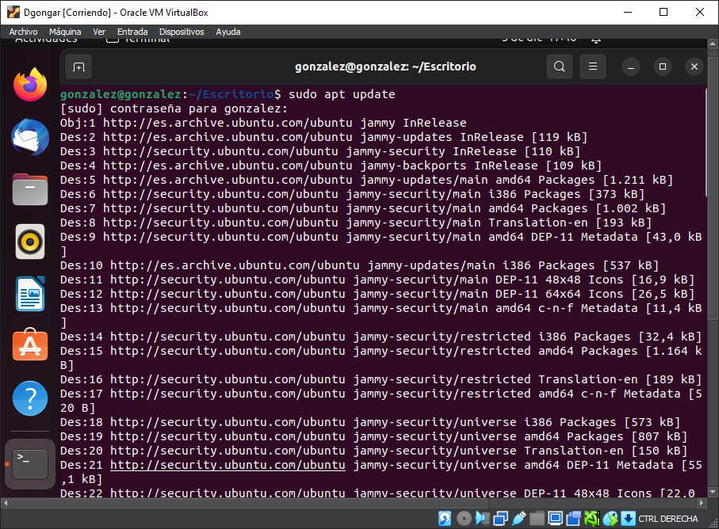E instalamos los paquetes necesarios:
$ sudo apt install -y unzip wget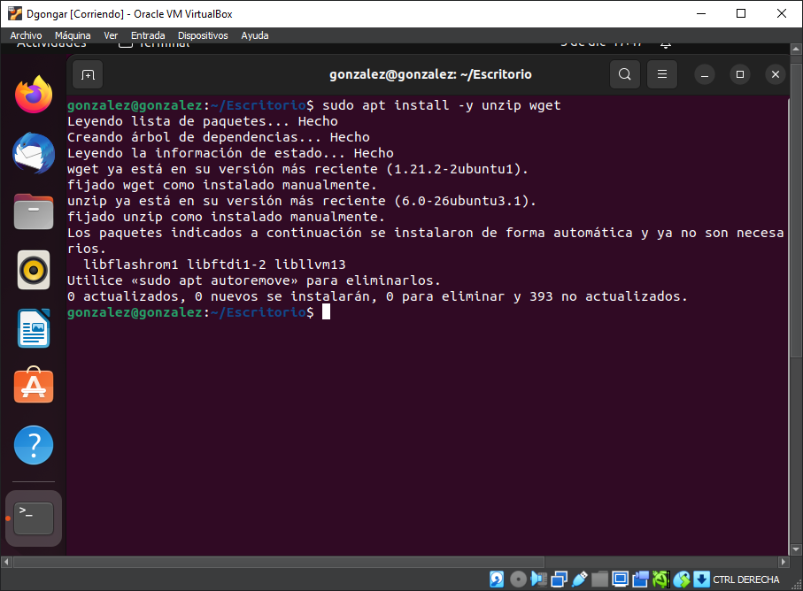 -
Vamos a descargar GlassFish para Ubuntu 20.04 LTS desde el sitio web del proyecto, donde buscaremos el último lanzamiento oficial (el que está etiquetado como «Latest«), descartando las versiones de prueba más recientes (etiquetadas como «Pre-release«):
De entre las descargas disponibles elegiremos el paquete con formato .zip, que podemos descargar desde el navegador o desde consola con alguna herramienta como wget:
$ wget https://github.com/eclipse-ee4j/glassfish/releases/download/6.2.5/glassfish-6.2.5.zip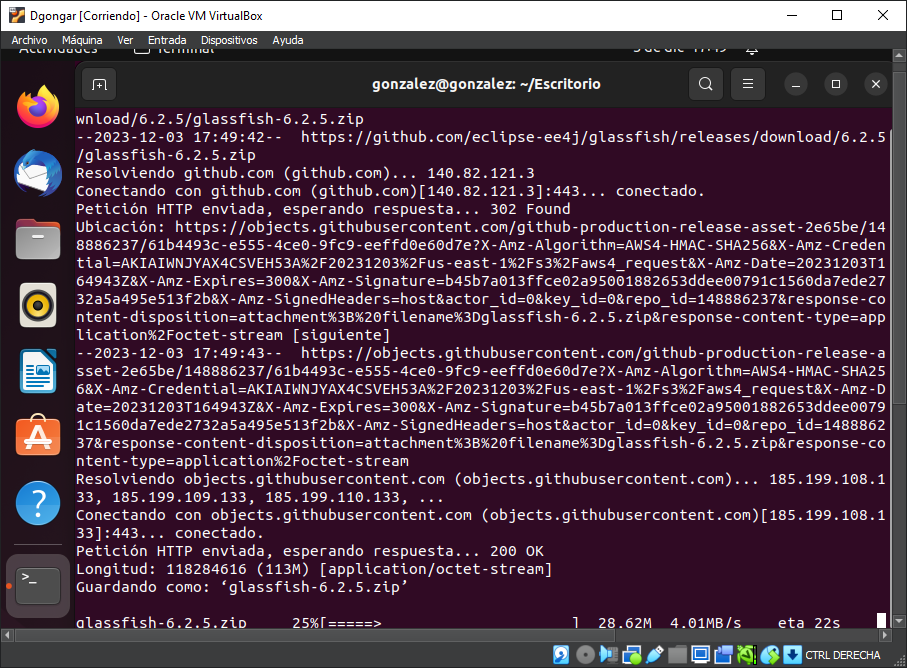 -
Para instalar GlassFish en Ubuntu 22.04 LTS Focal Fossa en primer lugar descomprimiremos el archivo que acabamos de descargar en su ubicación definitiva:
$ sudo unzip -q glassfish-6.2.5.zip -d /opt/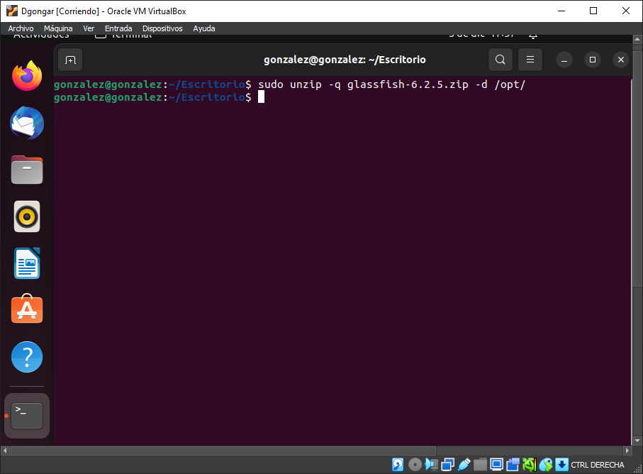 -
Ahora debemos instalar el JDK de Java:
$ sudo apt install openjdk-11-jdk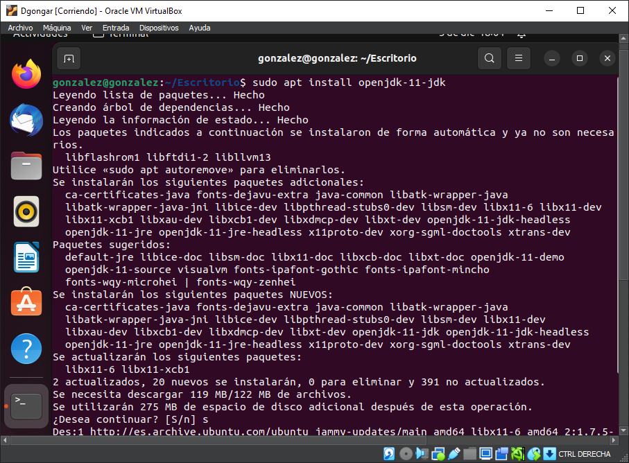 -
Comprobamos la version instalada:
$ java -version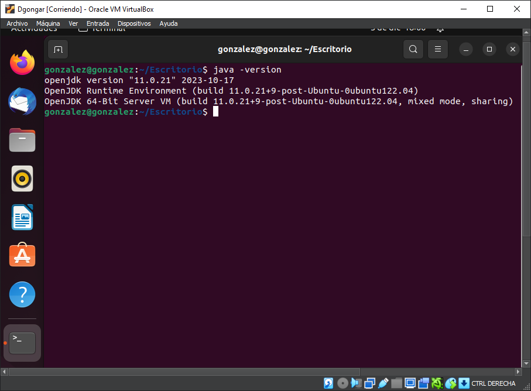 -
Editamos el archivo .bashrc para añadir los PATH necesarios
$ sudo nano ~/.bashrcUna vez dentro pondremos al final del archivo lo siguiente:
$ export JAVA_HOME=/usr/lib/jvm/java-11-openjdk-amd64$ export PATH=$PATH:$JAVA_HOME/bin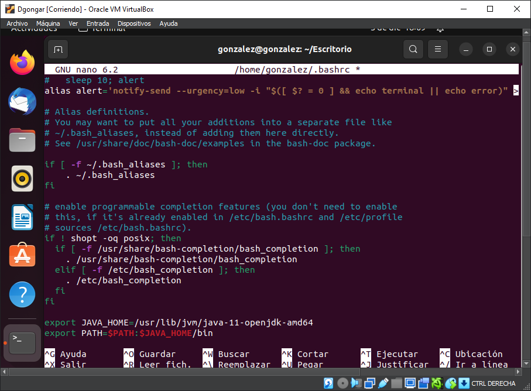 -
Actualizamos con lo siguiente:
$ source ~/.bashrc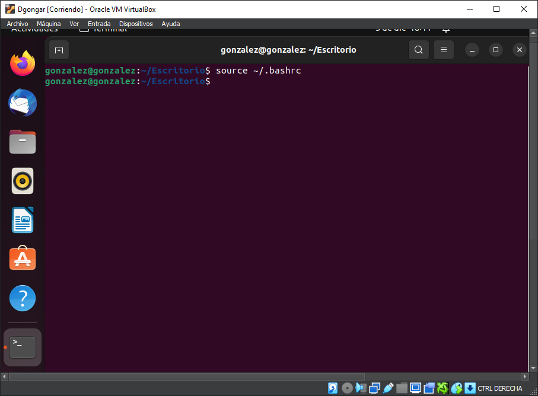 -
Con solo este paso, la plataforma queda lista para ser manejada a través de sus comandos de administración. Por ejemplo, para iniciar la plataforma:
$ sudo /opt/glassfish6/bin/asadmin start-domain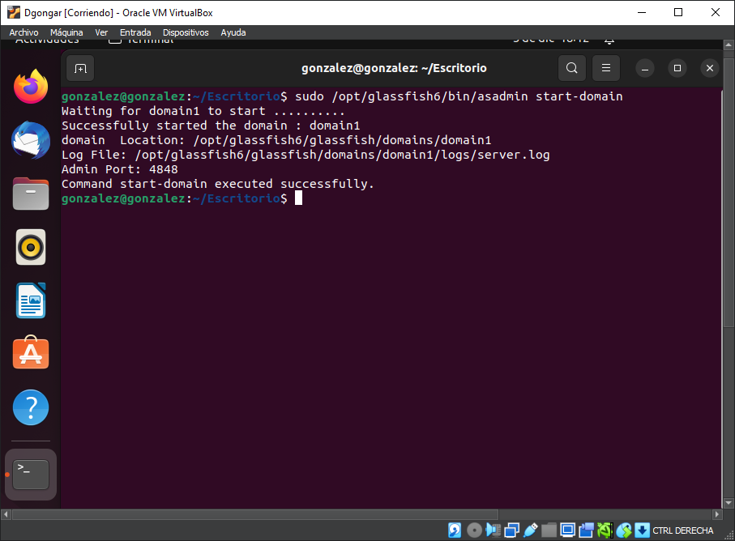 -
Si tienes activado el firewall UFW de Ubuntu 22.04 y quieres acceder a GlassFish desde red, será necesario añadir algunas reglas sobre los puertos principales.
Para el sitio web se trataría sel puerto 8080 TCP si trabajamos con conexiones HTTP estándar:
$ sudo ufw allow 8080/tcpY para la consola de administración, el puerto 4848 TCP:
$ sudo ufw allow 4848/tcp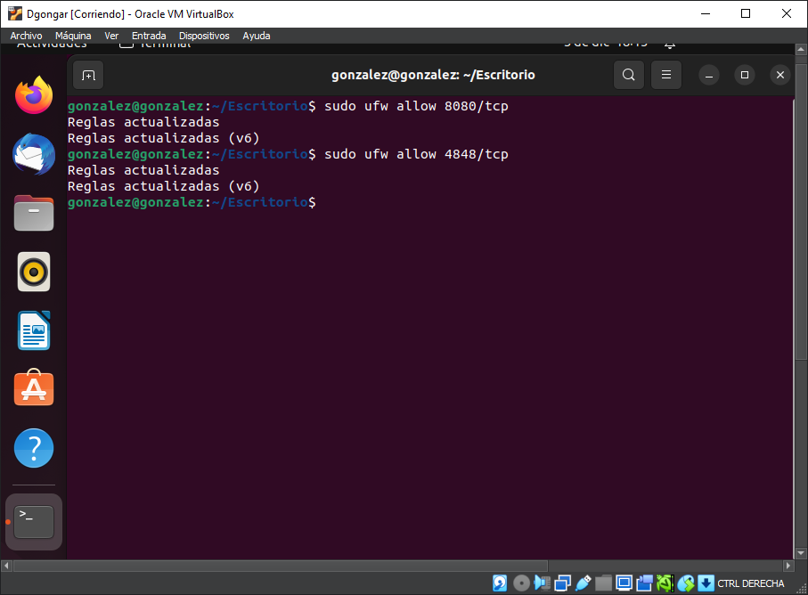 -
Ya lo tendriamos listo para abrirlo desde nuestro navegador, para ello introduciremos nuestra IP junto al puerto 8080 o con localhost junto al puerto 8080
localhost:8080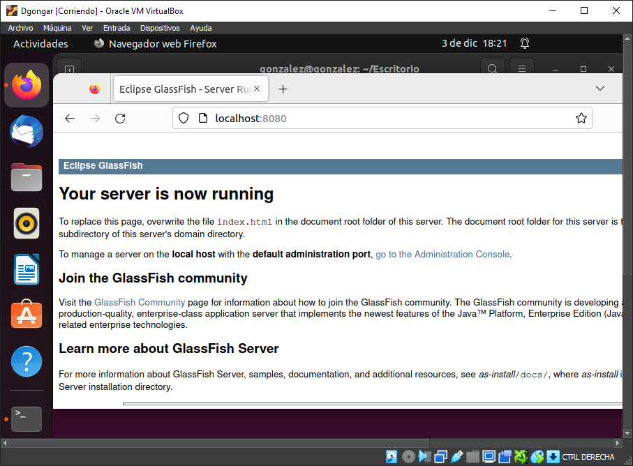